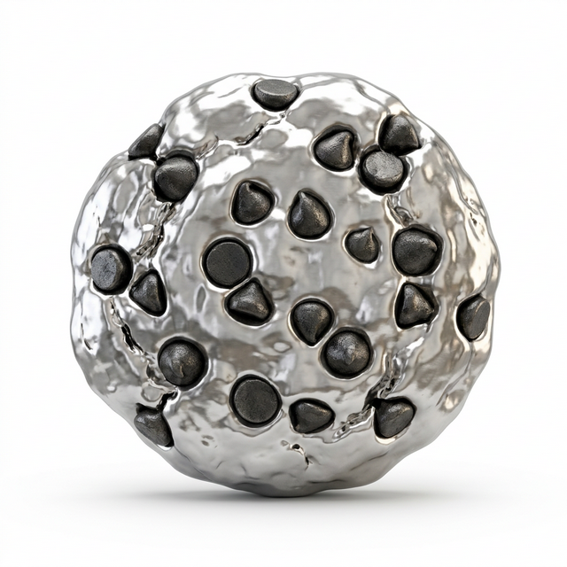

Hyper-Native Applications
Secure, fast, and seamlessly integrated Android and Rust applications.
System Settings
A native Kotlin Android app with direct access to host Wi-Fi, Bluetooth, and Hardware protocols.

Files Explorer
Jetpack Compose front-end providing a robust, premium bridging interface for the dual-OS filesystem.
Aluminum Terminal
Direct TTY access rendered with hardware acceleration using the Rust Wayland backend.